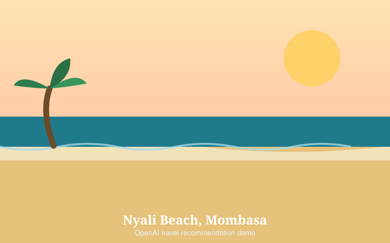

Nyali Beach, Mombasa — Kenya
Wide, soft sand and water that stays warm most of the year. Nyali is the closest proper beach to Kampala — about 400 km, roughly six hours by road.
- Best for: families, first-time visitors, long relaxed days
- Best time: December to March and June to October
- Honest note: the reef means strong currents at some beaches — ask locally which day is safe
Nyali has a marine park just offshore, so the snorkelling is the reason to come rather than the sand. Dhow trips run out at low tide, and the food is a serious reason not to skip lunch.